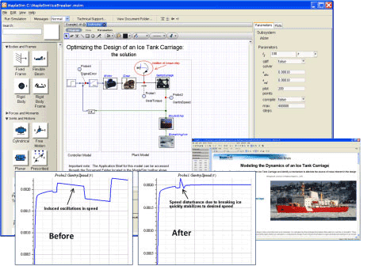
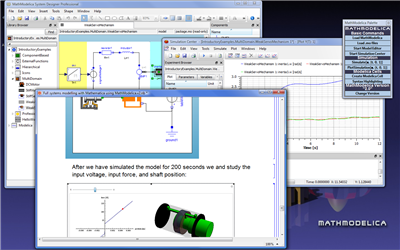
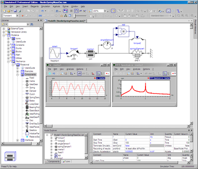
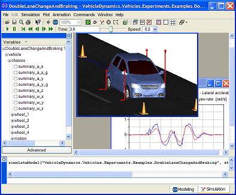

Modelica Newsletter 2009-1 (February 2009)
Table of Contents
News from the Modelica Association
- Letter from the Board
- 7th Modelica Conference, Sept. 22-24
- 1st Modelica Educational Workshop, April 2
- Release of Modelica_Fluid Library 1.0
- Collaboration (Trac, Subversion, ...)
News from Modelica related projects
News from Modelica tool vendors
Letter from the Board
Dear Modelica Interested,
2008 was an exciting year for the Modelica Association and the Modelica community. A lot has happened. In order that the Modelica community is better informed, at the last Modelica design meeting it was decided to publish a regular newsletter appearing several times a year. This is the first issue and shall summarize the most important events that occurred in the second half of year 2008. Since this is the first newsletter, it carries more information as we expect for the subsequent issues.
In 2008, a large amount of money was invested by many organizations in to the Modelica technology. Here are some examples:
- In three European projects (see below) about 54 Million € for 370 person years are invested to further develop Modelica, Modelica tools, Modelica libraries and related technology.
- Dassault Systèmes, a world leader in CAD and PLM, is integrating Modelica in CATIA Systems.
- Maplesoft, a world leader of symbolic mathematical analysis software, has recently released its new simulation engine MapleSim, which is based on Modelica (see below).
- Imagine, a world leader for hydraulic and fluid simulation software, was acquired by LMS International and recently provides support for Modelica in the product LMS Imagine.Lab AMESim.
- Existing Modelica tool vendors have further developed their tools (see below Dymola, MathModelica, SimulationX).
- Free Modelica environments are also further developed, especially Scicos within the French SIMPA2 project, and OpenModelica by the Open Source Modelica Consortium and additionally in the future with the brand new OPENPROD ITEA project (see below).
In 2008, the Modelica Association was able to work more intensively as in previous years due to the funding of new research projects. In particular:
- We are currently organizing together with Politecnico di Milano the next Modelica Conference in Como Italy, Sept. 20-22, 2009 (see below). At the last Modelica conference we had 250 participants and expect to have this time even more.
- We are currently organizing together with TU Berlin on April 2, 2009, a workshop in Berlin to exchange ideas and applications how to utilize Modelica in University courses (see below).
- A breakthrough was reached for the free Modelica_Fluid library which has been under development for 6 years. Modelica_Fluid allows device oriented modeling of fluid systems for steady-state and dynamic simulation. Version 1.0 of the library was released on January 28, 2009 (see below). It is based on the stream-concept newly developed for Modelica_Fluid in the EUROSYSLIB project, which introduces a third type of variable to the standard potential/flow, accross/through variable concept.
- A new version of the Modelica Standard Library, version 3.0.1, was released on January 27, 2009. This release contains bug fixes and few new functionalities in Modelica.Media as preparation for the follow-up release of Modelica_Fluid.
- The Modelica Association has improved its organization by using intensively an issue tracking system based on Trac. You may provide your issues to the Modelica language and the Modelica Standard library here (see below).
- Due to new organizational members, the regular income of
the Modelica Association is increasing. This has allowed us to
improve our web site and will in the future allow us to
improve non-research oriented work, such as improving the documentation
of the Modelica Standard Library. You can help us and the Modelica
community in this respect, by also becoming an organizational member,
see here
for details.
In case you have some interesting news for the Modelica community, feel free to write a short article in plain html (and eventually png or jpg images) and send it to the newsletter editor (Michael Tiller) for possible inclusion in the next newsletter. The deadline for articles for the next newsletter is April 1, 2009.
Best wishes from the Board of the Modelica Association:
Martin Otter, Chairman (DLR Germany)
Peter Fritzson, Vice-Chairman (Linköping University, Sweden)
Michael Tiller, Secretary (Emmeskay, U.S.A)
Hilding Elmqvist, Treasurer (Dynasim AB, Sweden)
P.S. The articles of the tool vendors in this and the coming newsletters are in alphabetical order according to tool name. For every newsletter the starting tool is permuted. We start this time with MapleSim since this is a new Modelica tool.
7th International Modelica Conference, Sept. 20-22, 2009 (Como, Italy)

The Modelica Association and Politecnico di Milano organize the 7th International Modelica conference, to be held at Grand Hotel di Como, Como, Italy, on 20-22 September 2009.
The conference will cover all the relevant Modelica topics: language design, numerical and symbolic methods, reusable model libraries, software tools, scientific and industrial applications. Tutorials will be held on Sunday afternoon, while regular sessions, poster sessions, tool presentations, and user's group meetings will be held on Monday and Tuesday.
Important dates:
| Submission of extended abstracts or draft papers: | May 4, 2009 |
| Notification of acceptance: | May 25, 2009 |
| Final paper submission and early registration: | July 13, 2009 |
| Conference tutorials: | September 20, 2009 |
| Conference sessions: | September 21-22, 2009 |
About the venue
The Grand Hotel di Como Conference Center is located in Cernobbio (see map), on the shore of lake Como at the feet of the Italian Alps, 10 minutes by bus or ferry from downtown Como. Railway connections are available to Milano Malpensa International Airport (1 h 20 min), Milano Centrale main station (40 min) and to the central European railway network through Switzerland. The site is also easily accessible by motorway.Updated information about the conference and the Call for Papers, Libraries, Exhibitors and Tutorials is available at: http://www.modelica.org/events/modelica2009/
This article is provided by Francesco Casella (Politecnico di Milano).
Workshop on Modelica for Education, April 2, 2009 (TU Berlin, Germany)
In order to improve the education on Modelica at Universities and to exchange corresponding ideas and applications, the Modelica Association and TU Berlin (Chair of Electronic Measurement and Diagnostic Technology) are organizing a one-day workshop at TU Berlin. Target audience are lecturers providing modeling, simulation, and/or control courses at Universities and either already utilize Modelica or are interested to utilize Modelica in their courses. If you plan to participate, please send an informal email to the organizers (ModelicaEducationalWorkshop@modelica.org) until March 7th.
If you would like to make a presentation (20 min + 10 min discussion) about the usage of Modelica for University courses, please send a 10-20 line abstract informally to the organizers (ModelicaEducationalWorkshop@modelica.org) until Feb. 23rd. The following presentations are already planned:
- Prof. Bernhard Bachmann
- Teaching Modelica for mathematicians and engineers at University of Applied Sciences, Bielefeld, Germany.
- Prof. Peter Fritzson
- Using an Electronic Book to teach Modelica for PhD and Engineering students at Linköping University, Sweden.
- Prof. Martin Otter
- Teaching Modelica for electrical and mechanical engineers at Technische Universität München, Germany
Most important information:
| Deadline for abstracts: | February 23, 2009 |
| Acceptance of presentations: | February 26, 2009 |
| Registration deadline: |
March 7, 2009 |
| Workshop date: | April 2, 2009, 9:00 - 17:00 |
| Workshop location: | Technische Universität Berlin Einsteinufer 17 D - 10587 Berlin |
| Workshop language | English |
| Workshop fee | none |
Updated information about the workshop and the Call for abstracts is available at: http://www.modelica.org/events/ModelicaEducational2009/
This article is provided by Prof. Gühmann (TU Berlin) and Martin Otter (Modelica Association and DLR-RM).
New Modelica Fluid Library Version 1.0 Released

Modelica Fluid was announced together with Modelica.Media on the Modelica’2003 conference, after the Modelica Association had made an attempt to standardize the most important interfaces and to provide good solutions for the basic problems of fluid modeling. By now Modelica.Media is widely used; regarding Modelica Fluid it has not been possible to utilize the ambitious goal for device-oriented modeling in realistic fluid applications so far. Still many different fluid libraries exist, each defining its own basics and each having its own downsides.
Exploiting lessons learned the Modelica Associaton has made a second attempt to standardize the basic fluid interfaces during the last year. It turned out that the regular Modelica connection approach with effort and flow variables is not sufficient for device-oriented fluid modeling. The newly introduced stream variables represent properties transported by a flow, such as specific enthalpy transported by a mass flow. This makes it possible that the significant amount of work that went into Modelica_Fluid finally yields fruits (17 persons have contributed to the development during the last 6 years).
Compared to previous beta releases, the code was reorganized and extended to cover the whole range from steady-state models to dynamic energy, mass and momentum balances. The fundamental balance equations for one-dimensional fluid flow have been decoupled from the device models based on them. This not only simplifies the readability and understanding, but also the maintenance and further development of the library.
Take the simple model of a heating system shown in the figure as example: as simple as it is, it features steady-state simulation and dynamic simulation with fixed or steady-state initial conditions by just changing one configuration parameter in the global system object. It treats a closed flow cycle in each of these settings; it contains an idealized pressure control embedded in the pump as well as a simple temperature control in the burner. The heater, the pipe and the radiator have detailed pressure loss models covering small laminar and zero flow as well, depending on the valve opening.
Modelica Fluid 1.0 has been released on January 28, 2009, and is available from the Modelica Web library page.
Partial financial support of ABB and DLR by BMBF (BMBF Förderkennzeichen: 01IS07022F) for the further development of Modelica_Fluid within the ITEA project EUROSYSLIB is highly appreciated.
This article is provided by Rüdiger Franke (ABB) and Francesco Casella (Politecnico di Milano).
Collaboration Services
The collaboration services of the Modelica Association have been improved. Summary:
Modelica Info Service
In Spring 2008 the Modelica Association decided to move its mailing lists to the Google Groups services. If you've received a notice for this newsletter via email from Modelica@Modelica.org then this means you are already subscribed to our Modelica Info Service. Regular news about the Modelica language design, Modelica libraries, Modelica meetings, and the Modelica Association are sent out to all subscribers of this info service. These news appear on the main page of www.modelica.org as well. If you didn't receive a notice for this newsletter via email but would like to receive it in future then please use the following link: Subscribe to the Modelica Info Service
Modelica Issue Tracking
Since the beginning of 2008, issues (bugs, improvement suggestions, questions, etc.) to the Modelica Language and/or to the Modelica Standard Library can be reported by everyone here, which is an issue tracking system based on Trac. By default, issues posted at the Modelica issue tracker are only visible to the designers of Modelica. When posting a "New ticket" and unmarking the selection box "Hide ticket", the issue is visible to everyone. If you have any tool related issues, contact the support sites of the tool vendors.
New Subversion server structure
For the development of the Modelica Standard Library the Modelica Association uses the Subversion software control system. It was recently upgraded to the new version 1.5.1 and the repository structure was improved. In case you used the Modelica subversion repository before and like to know more about the new structure then have a look at our developer pages.
Social Networks
Interested in keeping getting updates on major developments or service improvements? You can follow 'modelica' on Twitter and Identi.ca (the updates are provided by the current webmasters of modelica.org, Michael Tiller and Dietmar Winkler). In addition, it is planned to use these services extensively during upcoming Modelica related events to provide up-to-the-minute information. There is also a LinkedIn group to help you make connections with others in the Modelica community.
This article is provided by Michael Tiller (Emmeskay) and Dietmar Winkler (TU Berlin).
EUROSYSLIB (Advanced Modelica Libraries)
(ITEA
project, 19 partners, > 100 person years, > 15 Mill. € budget, Oct. 2007 - March 2010)
EUROSYSLIB is an ITEA2 European project to enlarge the already available large set of Modelica libraries by further 30 innovative Modelica libraries for:
- Electrical/Electronic Systems (e.g., SPICE, electrical machines)
- Mechanical Systems (e.g., Modelica in CATIA V6, flexible and thermo-elastic models).
- Thermo-Fluid Systems (e.g., Modelica_Fluid, pressure-loss/heat transfer characteristics, power plants, air conditioning).
- Control Systems (e.g., linear systems, controller design, state machines, networks, embedded systems)
- Vehicle Systems (e.g., VehicleInterfaces, alternative vehicles, engine, tyre, opening systems, vehicle control)
- Dysfunctional & Safety Systems (e.g., assessment of failure and reliability, failure scenarii, abnormal conditions)
- Library Infrastructure (e.g., parameters from persistent storage, integration in ENOVIA V6, IP protection, design optimization)
About one third of the Modelica libraries will be freely available under the Modelica License 2. The others will be commercially available from different vendors. As first library, the free Modelica_Fluid library was released and became available to the public on Jan. 28, 2009.
Project contacts: Francois Bichet, Piero Brozzu (Dassault Systèmes), Martin Otter (DLR-RM and Modelica Association)
This article is provided by Francois Bichet, Piero Brozzu (Dassault Systèmes), and Martin Otter (DLR).
MODELISAR (Modelica-AUTOSAR Interoperability and Vehicle Functional Mock-up)
(ITEA
project, 30 partners, > 175 person years, > 28 Mill. € budget, July 2008 - June 2011)
MODELISAR is an ITEA2 European project to improve significantly the design of systems and of embedded software in vehicles. Major achievements will be:
- Support of AUTOSAR (the coming standard for embedded system software in vehicles) in Modelica and in Modelica tools of the MODELISAR partners.
- A new, open, interface standard FMI (Functional Mock-up Interface) will be developed in order that models from different simulation environments, including the Modelica and non-Modelica tools of the MODELISAR partners, can be conveniently used in other environments. Usage of a model in another environment can either be performed by model coupling, i.e., no integrators are embedded in the model, or by co-simulation in various levels. FMI covers also libraries of embedded software and will be the basis for advanced code generation for AUTOSAR.
- The proof-of-concept of the FMI standard and of its support in several tools (including Modelica and non-Modelica tools, AUTOSAR editors, simulation editors/schedulers etc.) will be performed by industrial automotive scenarios such as power-lift gate, cabriolet opening system, mechatronic shifting, chassis control, climate comfort.
- Testing methodologies will be significantly improved and adapted to FMI and to Modelica.
- Data, models, and software will be integrated into the V6 PLM database to integrate tools and manage work flow, versions and variants over the product life.
Project contacts: Francois Bichet, Patrick Chombart (Dassault Systèmes), Bernd Relovsky (Daimler)
This article is provided by Francois Bichet, Patrick Chombart (Dassault Systèmes), Bernd Relovsky (Daimler) and Martin Otter (DLR-RM).
OPENPROD (Open Model-Driven Whole-Product Development and Simulation Environment)
(ITEA
project, 25 partners, > 90 person years, > 11 Mill. € budget, May 2009 - April 2012)
OPENPROD is an ITEA2 European project that will provide an open, whole-product model-driven rapid systems development, modeling, and simulation environment integrating in to the leading open industrial software development platform (Eclipse) with open-source (OpenModelica, etc.), as well as industrial modeling and simulation tools and applications. The main research topics are:
- Integrated hardware software modeling by Modelica - UML - SysML integration.
- Model compiler enhancements.
- Compilation of Modelica to parallel multi-core platforms.
- Tool interoperability.
- Application demonstrators.
This article is provided by Peter Fritzson (PELAB).
Maplesoft launches Modelica-based Tool for Modeling and Simulation

Maplesoft, the developer of Maple, the world’s most advanced symbolic mathematical analysis software, has recently announced the availability of MapleSim™, the latest Modelica-based commercial tool for high-performance multi-domain modeling and simulation. After months of intense pilot testing and feedback from approximately fifteen hundred organizations spanning 85 countries, MapleSim is now ready for engineers who need to dramatically shorten their product development cycle and provide their organizations with significant productivity and analytical advantages.
MapleSim combines Modelica libraries with advanced symbolic computing and high-performance numeric solvers to supercharge the simulation and modeling process, all within a highly intuitive model-development user interface that includes the Modelica Standard component library. Unlike other physical modeling tools, MapleSim uses automatic equation-generation at its core by taking full advantage of the Maple computation engine. Using this approach, the development of the system equations, model simplification and dynamic analysis of complex systems can reduce the prototyping stage of the design process by weeks or even months.
Productivity aside, MapleSim takes advantage of many features of Maple that have been developed over its 25-year history to produce highly efficient models. These require significantly less computation during simulation than purely-numeric models. Not only that, the built-in code-generation of Maple allows these simplified models to be exported as C code to external applications. Because of the symbolic preprocessing, this code runs ten to one hundred times faster for complex models, making it ideal for real-time simulation and hardware-in-the-Loop (HIL) applications.
For more information about MapleSim, and to request a free evaluation, go to www.maplesoft.com/maplesim.
This article is provided by Maplesoft.
MathModelica 2.0 Released

A new version of MathModelica was released on December 17th 2008. The new edition includes support for the Modelica StateGraph library, Modelica 3 annotations, interactive documentation, and dynamic sensitivity analysis.
The addition of Modelica 3 annotations makes it easier to use Modelica models developed in other Modelica tools as well as using MathModelica models in other Modelica tools. A new library browser makes it possible to have different libraries open in different widgets and a tabbed model interface that provides a convenient management of open models has also been added.
A new library documentation browser has been introduced, and includes a built in HTML editor as well as automatic generation of tables with available model constants, parameters, variables, components, connections, and classes. It is possible to browse the documentation just as in your Internet browser; clicking on a component link in the documentation browser takes you to the documentation page of that component and clicking on a model opens the icon layer, and so on.
The addition of dynamic sensitivity analysis of models allows users to find out which parameters affect the system behavior most. The obtained information can be used to understand how a model or the real system can be improved.
MathModelica comes in three different editions. The Lite edition for small student projects, the Standard edition for modeling and simulation projects in industry and academia, and finally the Professional edition which includes a tight integration with Mathematica. You can read more about the release on MathCore's homepage.
This article is provided by MathCore.
OpenModelica 1.4.5 Released

Here are the most important improvements of this OpenModelica release (see www.openmodelica.org).
- Less memory consumption and better memory management over time.
- New Qt-based 2D plotting and simple 3D visualization.
- Modelica 3.0 parsing support.
- Export of DAE to XML and MATLAB.
- Support for several platforms Linux, MacOS, Windows (2000, XP, Vista).
- Support for record and strings as function arguments.
- Many bug fixes.
- Additional free graphic editor SimForge (developed at Politecnico di Milano) can be used with OpenModelica.
The development work is being accelerated by the expanded Open Source Modelica Consortium, currently supported by 11 companies/institutes and 8 universities.
This article is provided by Peter Fritzson (PELAB).
OpenModelica Annual Workshop February 2, 2009
For registration and full program, see www.openmodelica.org.
Summary:
- Status and Directions of OpenModelica
- OpenModelica in Mechatronic applications at Bosch
- Modelica Library Usage in OpenModelica
- OpenModelica integrated with a semantic database and multi-tool environment
- Modelica Applications at ABB
- Technical Overview of OpenModelica and its Development Enviroment
- The new OpenModelica Solver interface
- MetaModeling in OpenModelica, Current and Future
- Panel Discussion: Future Directions of OpenModelica
This article is provided by Peter Fritzson (PELAB).
SimulationX and Modelica

The system simulation tool, SimulationX® of the German software company ITI, has used Modelica for physical modelling from its inception. Over time, Modelica has become the leading physical modelling language and ITI has been there every step of the way. ITI has continually incorporated Modelica support into SimulationX. The new release SimulationX 3.1 contains expandable connectors and within a short the over-constrained connection graphs will complete the Modelicability of the tool – thus enabling users to access the Modelica MBS library, too. The family of Modelica Standard Libraries extends another source of models for the existing SimulationX community, in addition to the detailed libraries of ITI. Moreover all the Modelica Standard libraries and the SimulationX libraries can be used in combination and mixed.
The TypeDesigner in SimulationX is the only smart editor for Modelica classes. The TypeDesigner has been extended and now supports the Modelica 3.0 language features.
The complete spectrum of the SimulationX computation methods (calculation in time and frequency domain, natural frequencies and mode shape analyses) can be applied to all kinds of Modelica models.
By means of the elaborate COM interface the tool can be controlled by other applications and fully integrated into any workflows, including pre- and post-processing.
Models can be exported and compiled for use as standalone license-free applications and integration with other tools or RT environments. Various target platforms (MATLAB/Simulink, Simpack, dSPACE, Scale-RT) are directly supported by SimulationX Code Export.
This article is provided by ITI.
Dymola version 7.1

Dymola 7.1 marks a significant extension in particular with regard to export of models and code generated from Dymola. Three export alternatives with different functionality are provided. Furthermore, run-time licenses are provided in order to allow models developed with a standard (no export) Dymola license to be simulated on other computers.
The Real-time Simulation option enables the model to be used in environments not supporting the Microsoft C compilers. The option is specifically designed for real-time platforms, such as the dSPACE and xPC platforms that are supported by Dymola for Hardware-In-the-Loop (HIL) simulation.
The Binary Model Export option allows the model to be exported to other Windows computers without requiring a Dymola license at the target system. The simulation functionality of the exported model is the same as on a computer having a Dymola license.
Source Code Generation exports code that can be used on any platform without the need of a Dymola license at the target system. Source Code Generation allows export of readable and well-documented code facilitating inspection, debugging, profiling, etc. This makes this export option suitable for advanced model-based applications, such as rapid prototyping.
Dymola Run-time licenses are introduced to enable models developed by users that lack export options to be run at other computers. Dymola run-time works both for the Dymola Simulator (dymosim.exe) and for models developed with the Simulink interface.
A template project, StandAloneDymosim, describes how to interface models exported with Binary Model Export and Source Code Generation to standard integration routines to build stand-alone applications.
For more information on Dymola, see http://www.dymola.com.
This article is provided by Dynasim.
In this Newsletter, the following registered trademarks are referenced:
CATIA® and ENOVIA® are registered trademarks of Dassault Systèmes.
dSPACE® is a registered trademark of dSPACE GmbH.
Dymola® is a registered trademark of Dynasim AB.
MATLAB® and Simulink® are registered trademarks of The MathWorks Inc.
Maplesoft® and MapleSim® are registered trademarks of Waterloo Maple Inc.
MathModelica® is a registered trademark of MathCore Engineering AB.
Modelica® is a registered trademark of the Modelica Association.
SimulationX® is a registered trademark of ITI GmbH.